CoffeeTime
Simulador de gestión de una compañía cafetera
Simulador de gestión de una compañía cafetera
Simulador de gestión de una compañía cafetera
Tu equipo dirige una de las cinco compañías cafeteras que compiten en Costa Rica con dos líneas de producto — café convencional y café orgánico — molidas y empacadas en una misma planta. Cada periodo decides precio, marca, producto, distribución y producción, y puedes expandirte a una segunda región. El objetivo es hacer crecer el Valor de la Compañía al menos un 7% por periodo, leyendo el cuadro de mando antes de decidir.
CompanyGame ofrece una amplia gama de simuladores de negocio organizados por nivel de dificultad y área de conocimiento. CoffeeTime se ubica en el área de Marketing y Ventas, en la franja de niveles 3 y 4.

Guarda la imagen de avatares como assets/avatares.png en la carpeta del proyecto y aparecerá aquí automáticamente, con el mismo estilo que la cartelera.
Antes de decidir nada hay que entender el negocio: qué empresa dirige el equipo, de qué depende su coste, quién le compra y con qué criterios. Todo esto está en el manual del simulador y es lo que se recorre en las cinco láminas siguientes.
Todos los equipos arrancan idénticos en el Periodo 0: mismas cifras, misma planta, misma cuota de mercado. A partir de ahí, la diferencia la hacen las decisiones y la lectura de los informes.
Café convencional y café orgánico, ambos molidos y empacados en la misma planta. Cada línea tiene su propio precio, coste y valor de producto.
Clase alta, media y baja. Cada una pondera distinto el precio, la marca y el producto: la alta valora los intangibles, la baja el precio.
Norte, con 580.000 consumidores, donde compiten hoy las cinco compañías; y Sur, con 720.000, todavía sin atender. Entrar al Sur es irreversible.
Capacidad inicial de 170.000 kilos, ampliable durante la simulación. Las dos líneas compiten por la misma capacidad instalada.
CoffeeTime encadena cuatro eslabones. En todos ellos hay una decisión tuya, y cada una deja huella en el coste por kilo o en la percepción del consumidor.
Es el componente que no se decide: 5,50 por kilo en convencional y 10,30 en orgánico. Explica cerca del 89% del coste unitario de fabricación.
Aquí sí decides: proceso (básico, estándar o premium), packaging y amplitud de gama. Cada nivel sube el valor de producto… y el coste.
Descuento al canal, promoción en punto de venta y modalidad logística (mensual, quincenal, semanal) determinan tu cobertura de distribución.
Compra según precio, marca, producto y disponibilidad. Cada segmento pondera esos factores de forma distinta, y por eso no existe una única estrategia ganadora.
| Componente | Café convencional | Café orgánico | Se decide |
|---|---|---|---|
| Materia prima | 5,50 | 10,30 | No — viene dada por la línea de producto |
| Elaboración | 0,48 | 0,87 | Sí — proceso, gama y ocupación de fábrica |
| Packaging | 0,20 | 0,45 | Sí — nivel de packaging (1 a 3) |
| Coste unitario total | 6,18 | 11,62 | El orgánico cuesta casi el doble |
Con un 80% de ocupación el coste de elaboración sube un 18%; con un 40%, sube un 50%. Una fábrica vacía encarece cada kilo que sí produces.
Pasar de gama 2 a gama 4 encarece la elaboración un 18% en convencional y un 23% en orgánico, a cambio de más valor de producto.
Quincenal 0,10 por kilo, semanal 0,25, intensiva 0,60. Más frecuencia significa más presencia en el lineal… y más coste.
No son decisiones que se toman una vez: el equipo vuelve sobre los cuatro menús en cada ronda, con los resultados del periodo anterior a la vista.
• Precio de venta por línea de producto
• Descuento que cedes al canal
• Gasto de promoción en punto de venta
• Previsión de unidades a vender
• Priorización de los tres segmentos (1 a 10)
• Gasto en promoción de marca
• Priorización de las acciones de promoción
• Proceso de producción: básico, estándar o premium
• Nivel de packaging
• Amplitud de gama por línea
• Ampliación de la capacidad de la fábrica
• Modalidad logística: mensual, quincenal o semanal
La entrada se habilita a partir de la segunda ronda de decisiones, no antes.
Una vez tomada no se puede modificar. Conviene meditarla antes de ejecutarla.
Si no introduces el precio de venta para la nueva región, la entrada no se hace efectiva.
Durante toda la simulación se puede estar presente en dos regiones como máximo.
En el Periodo 0 el convencional se vende a 12,00 y el orgánico a 20,00. Del precio de góndola se descuenta lo que cedes al canal: con un −15%, el ingreso neto para la compañía baja a 10,20 y 17,00.
En el Periodo 0 está en 40 (convencional 41, orgánico 36), tras subir 2,5 puntos. Se construye con la priorización de segmentos y el reparto del presupuesto de marca.
En 6,3 y estancado: gama en 2 (máximo 5 en convencional y 4 en orgánico), packaging en 1 de 3 y proceso en el nivel básico. Todo está en el mínimo.
Es el porcentaje de puntos de venta donde está tu café: 26,4 en convencional y 24,2 en orgánico, frente a 23,6 el año anterior. Sube con el descuento al canal, la promoción en punto de venta y la frecuencia logística.
| Promoción de marca | Volumen de impacto | Calidad de impacto |
|---|---|---|
| Redes sociales | 5 | 1 |
| Publicidad en medios generales | 4 | 2 |
| Patrocinios | 3 | 3 |
| Relaciones públicas | 2 | 4 |
Escala de 1 a 5. Mucho alcance no significa mucho impacto: si te diriges a clase alta, ¿gastarías en redes o en relaciones públicas?
| Promoción en punto de venta | Dirigido al público | Dirigido al canal |
|---|---|---|
| Material promocional | 5 | 1 |
| Displays de presentación | 4 | 2 |
| Publicidad en medios especializados | 3 | 3 |
| Eventos | 1 | 5 |
Escala de 1 a 5. Si la marca todavía es poco conocida, el manual recomienda reforzar la venta desde el punto de venta.
Aquí no se decide todavía: se lee. Los diez informes cuentan qué pasó el periodo anterior y por qué. De su lectura sale el diagnóstico, y del diagnóstico salen las decisiones. Es la parte que más pesa en la formación.
El cuadro de mando de CoffeeTime no es un anexo: es la herramienta de trabajo del equipo y el centro de la formación. Cada informe responde una pregunta distinta y dispara una decisión concreta, y todos se leen con las cifras del Periodo 0 a la vista.
Abrir los diez informes en orden, empezando por los indicadores clave, y anotar qué mejora y qué empeora frente al periodo anterior.
Distinguir la cifra del diagnóstico: ¿por qué se movió? ¿Fue una decisión propia, el mercado o un competidor?
Cuánto falta para el +7% y de qué factores concretos se piensa sacar. En puntos, no en intenciones.
«Si subimos X, esperamos que ocurra Y», escrito antes de enviar. Y qué cuesta cada decisión en margen por kilo.
Al cerrar el periodo, comparar el resultado real con la hipótesis. La diferencia entre ambas es el aprendizaje.
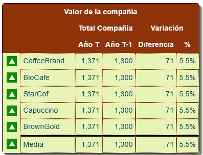
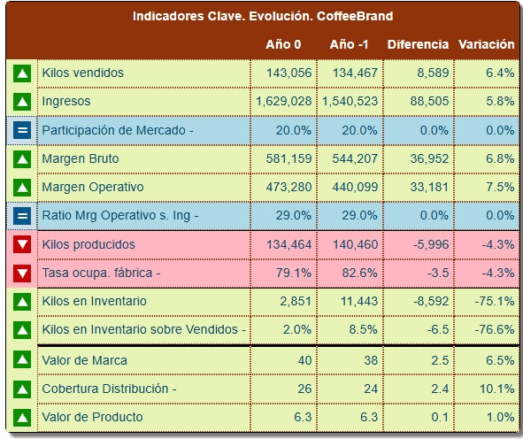
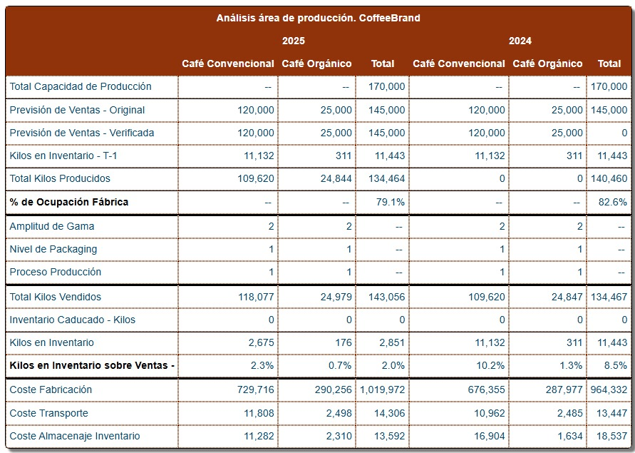
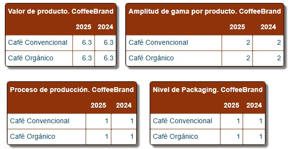
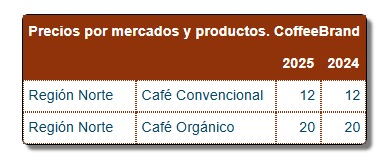
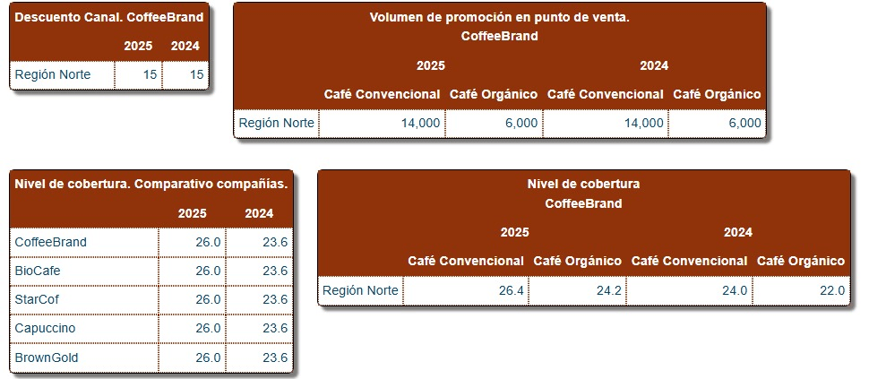
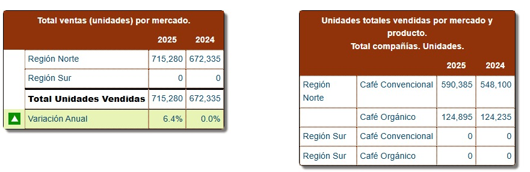
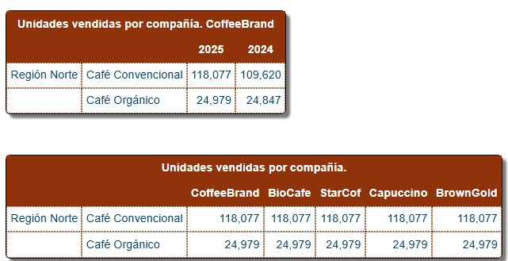
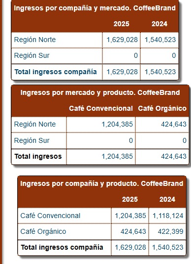
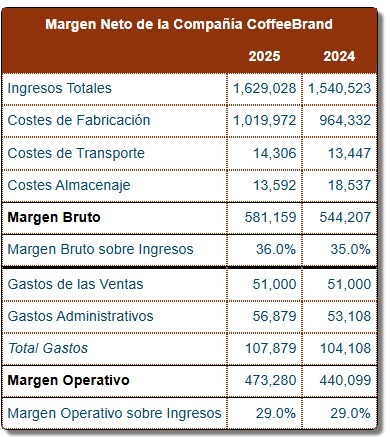
El ranking no se decide solo por dinero. Los resultados económicos pesan el 45%, pero el 55% restante depende de los activos que sostienen el margen futuro: producto, marca, cobertura y cuota de mercado.
Es el margen operativo sobre ingresos. En el Periodo 0 fue del 29%: 473.280 sobre 1.629.028 de ingresos. Casi la mitad del marcador sale de aquí.
Combina amplitud de gama, nivel de packaging y proceso de producción. En el Periodo 0 está en 6,3 de 10, con las tres palancas en su nivel mínimo.
Se mide en escala de 10 a 100 y en el Periodo 0 está en 40 (41 convencional, 36 orgánico). Depende de la priorización de segmentos y del reparto del presupuesto de promoción de marca.
Porcentaje de puntos de venta donde está tu café: 26,0 en el Periodo 0, frente a 23,6 el año anterior. Sube con el descuento al canal, la promoción en punto de venta y la frecuencia logística.
La cuota sobre el total del sector. En el Periodo 0 las cinco compañías tienen exactamente el 20%: el empate es el punto de partida de todos.
| Componente | Puntos en el Periodo 0 | Lectura |
|---|---|---|
| Resultados económicos | 521 | El bloque más grande, como marca su peso del 45% |
| Valor de producto | 186 | Estancado: gama y packaging sin cambios |
| Valor de marca | 184 | Sube por la promoción sostenida |
| Cobertura de distribución | 184 | Más puntos de venta alcanzados que el año anterior |
| Participación de mercado | 176 | 20% para las cinco compañías |
| Tasa de ocupación de fábrica | 120 | El componente más bajo — la planta al 79,1% |
| Valor de la Compañía | 1.371 | +5,5% desde 1.300 — por debajo del 7% esperado |
El momento de actuar. Ocho pantallas donde el equipo traduce el diagnóstico en once decisiones concretas. Nada cuenta hasta pulsar Grabar, y casi todo se puede corregir mientras el periodo siga abierto — salvo las decisiones estratégicas, que no tienen marcha atrás.
Capturas reales de la plataforma. Cada columna «Último» muestra lo que hizo la compañía el periodo anterior y «Nuevo» es donde el equipo decide. El orden es el de la plataforma: las estratégicas van primero porque son irreversibles y condicionan al resto, y grabar va al final. Haz clic en cualquier pantalla para ampliarla.
Ampliación de la capacidad de fabricación — y, desde el periodo 2, la entrada a la Región Sur.
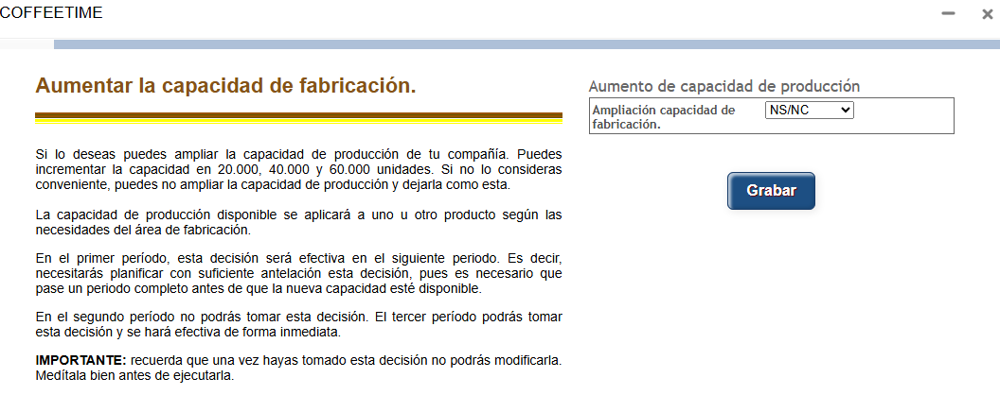
Kilos que el equipo espera vender por línea. Fabricación produce exactamente esto — es la decisión que arrastra a todas las demás.
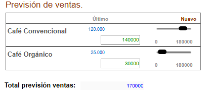
Reparto de 21 puntos entre las tres clases sociales, y precio de venta por región y línea de producto.
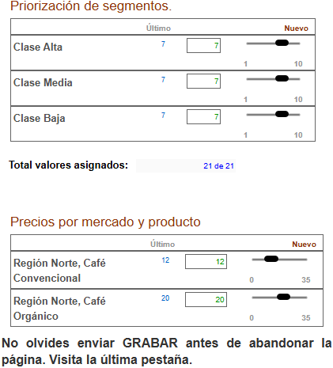
Proceso de producción, nivel de packaging y amplitud de gama, línea por línea.
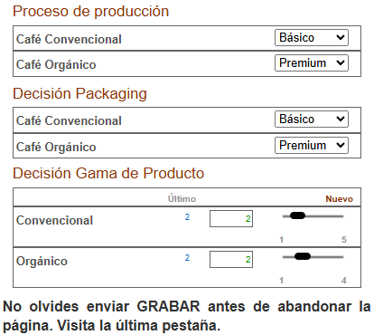
Presupuesto de marca por mercado y reparto entre las cuatro acciones de promoción.
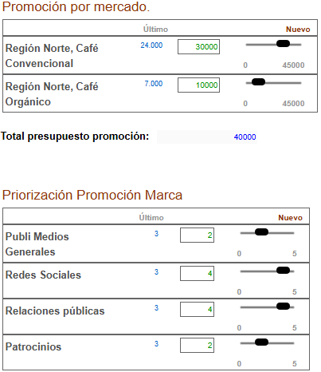
Reparto entre las cuatro acciones dirigidas al comprador y al distribuidor.
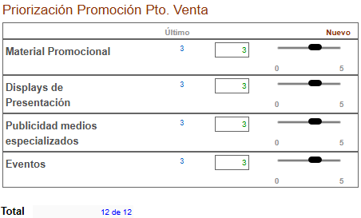
Modalidad logística, descuento que se cede al canal y presupuesto de promoción en punto de venta por mercado.
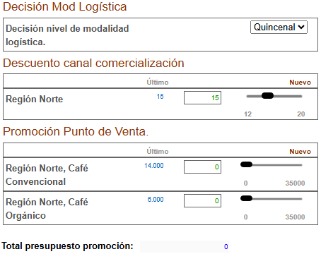
La última pestaña: suma de lo decidido, límite del periodo e histórico. Nada cuenta hasta pulsar Grabar.
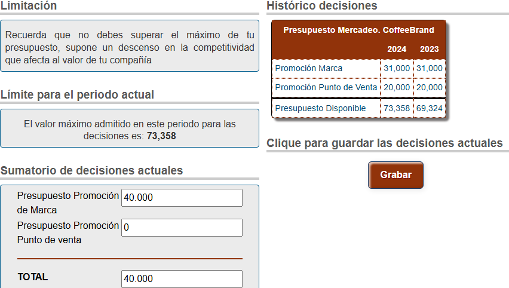
Gracias por participar en CoffeeTime